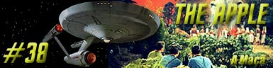
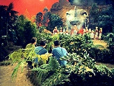
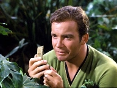
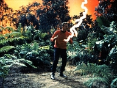
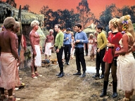
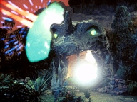

|
Srie
Clssica
Temporada 2

Anlise do episdio por
Carlos
Santos


|
MANCHETE
DO EPISDIO Data Estelar: 3451.9.
 Pouco tempo depois Scotty informa que a situao na Enterprise vai piorando, deixando Kirk preocupado. O engenheiro afirma ter identificado algum tipo de feixe de energia vindo da superfcie em direo a nave, mas no consegue definir exatamente como. Pouco tempo depois Spock atingido por espinhos venenosos ao se colocar na frente de Kirk quando uma das plantas tenta atac-lo. Kirk decide voltar, mas o transporte no consegue tirar o grupo do planeta, deixando o grupo ilhado. Apesar disto, Spock volta a si e Kirk decide tentar descobrir o que est interferindo com o funcionamento da Enterprise, porem mais duas mortes acontecem, deixando Kirk transtornado. Nesta hora Spock percebe que o observador oculto est de volta. Eles criam uma distrao e conseguem surpreender o observador, que descobrem se chamar Akuta, o sacerdote de Vaal. Segundo Akuta, Vaal uma espcie de Deus, que controla tudo no planeta e prove os recursos necessrios a existncia de seu povo. Akuta tem aparelhos implantados que permitem que Vaal se comunique com as pessoas atravs dele.  Uma vez que a condio no permitia nenhuma ao de momento, o grupo se retira para a aldeia do povo de Vaal. L eles comeam a descobrir que eles vivem com marionetes. Eles so protegidos por Vaal, mas trata de prover todas as necessidades das pessoas, controlando tudo na planeta, desde preveno de doenas at mesmo as variveis ambientais, impedindo at contato fsico entre eles. Enquanto aguardam uma chance para agir, o grupo da Frota Estelar inicia um debate sobre a forma como Vaal controla aquelas pessoas. Com a situao da nave cada vez pior Kirk esta disposto a destruir Vaal mesmo que isto custe interferir na vida dos habitantes locais. Pouco tempo depois, um casal nativo assiste Chekov e a ordenana Marta se beijarem e embora achem estranho, experimentam fazer o mesmo. A experincia no passa desapercebida por Akuta, e por extenso por Vaal, que decide que o grupo da Enterprise deve morrer. Vaal fornece o conhecimento ao nativos para executar a tarefa, mas estes falham, embora tenham causado mais uma baixa no grupo avanado. 
Diz o velho ditado que de boas intenes o inferno est cheio. Se isto verdade, The Apple um bom exemplo disto. O segmento tenta abrir uma vez mais a discusso (recorrente em Jornada) Homem x Maquina, mas consegue apenas ser um episodio desajeitado. A comear pelo argumento reciclado de The Return of the Archons, entre outros, onde um computador tambm dirigia o destino das pessoas. Uma vez mais Jornada nas Estrelas finca sua bandeira no tema da substituio do homem pela maquina, e mais, defende desesperadamente o direito do homem a liberdade de escolha. O contra censo que Kirk e McCoy desejam de qualquer maneira impor este direito de escolha ao povo do planeta que mal conhecem, a partir do seu (pr) conceito de que o paraso de Vaal vazio, uma vez que seu povo desprovido de propsito. Vaal como um Deus para os simples habitantes deste planeta. Por algum motivo, a maquina foi deixada com a misso de proteger aqueles seres de agentes externos, e por muito tempo, isto foi feito com sucesso. Vaal manteve aquelas pessoas em segurana, saudveis, alimentadas e longe dos perigos de seu planeta. O preo disto a ignorncia, que os membros da Frota Estelar chamam de estagnao.  Pode um homem ser governado por uma maquina? Que tipo de sociedade surgir deste tipo de associao? Ter esta maquina condies reais de gerir a vida destes seres humanos? E se isto fosse possvel, poderia Kirk, ou a Federao ter o direito de decidir por aquelas pessoas, a partir de sue conceito do que certo ou errado? Tais questionamentos so sugeridos, mas logo abandonados. Estrategicamente a Enterprise colocada em perigo, no dando a Kirk outra opo seno destruir Vaal, para poder salvar a nave, situao que sepulta todo o debate de forma abrupta. Muitos (como Spock) se perguntam de que vale a primeira diretriz ? No muito. Apesar de fs de Jornada nas Estrelas passarem anos discutindo a to falada lei mxima da Federao dos Planetas Unidos, pelo menos na Srie Clssica tal lei nunca foi levada muito a srio e The Apple um mais exemplo disto, onde novamente vez Kirk chuta a lei mxima da Federao sem reservas. De forma intencional ou no, o segmento abre uma outra perspectiva de leitura. Fica claro que existe um culto a Vaal, e mostrar Akuta como um sacerdote s refora esta idia. Pela lgica do segmento, tal influencia negativa. Impossvel no fazer um paralelo com o pensamento de muitas pessoas de que a religio pode ser usada como uma forma de controlar as pessoas. Vaal mantm o povo na ignorncia e ao mesmo tempo se apresenta como Deus, tornando fcil a tarefa de mant-los dentro daquilo que se considera certo, pelo menos para os padres de quem construiu Vaal. A metfora do paraso s complementa esta idia. Por este prisma, o culto a Vaal (a religio) tornou os habitantes daquele planeta (uma representao da humanidade) pessoas sem propsito, incapazes de realizar algo por elas prprias, logo necessrio se livrar de Vaal para progredir, necessrio provar a maa, e deixar o paraso. Karl Marx dizia que A igreja o pio do povo, e sendo Roddenberry ateu, bem provvel que o grande passaro da galxia tivesse o mesmo pensamento.  The Apple fracassa por justamente por propor demais e realizar quase nada. O tema (ou temas) que poderiam ser tratadas aqui so levados de forma ingnua e superficial, e no fim do episodio, a concluso simplista est longe de atingir e considerar de forma mais correta as suas implicaes. Kirk e sua tripulao uma vez mais interferiram na vida da sociedade que encontraram, de forma aguda e significativa. Onde fica a responsabilidade sobre isto ? Outros detalhes se somam para atrapalhar o andamento do episodio. Primeiro, ele tem gosto de comida requentada, pois os temas abordados aqui j p foram em outras ocasies, como o j citado The Return of the Archons, ou em Court Martial, A Taste of Armageddon, This Side of Paradise, entre outros. Segundo, por The Apple, abusa em reunir uma srie de clichs da Srie Clssica, como as mortes idiotas dos red shirts, tratadas com a sensibilidade de um rinoceronte, o descaso com preparativos de segurana mnimos para uma misso a um planeta desconhecido, e hostil ( ridculo ver aquele grupo de pessoas andando por um lugar estranho e potencialmente perigoso como se fossem crianas em um piquenique), o capito, o primeiro oficial e medico da nave fazendo parte de um grupo avanado,etc, etc. Nem os temas recorrentes e nem as situaes citadas antes causam estranheza a quem acompanha a srie, mas o excesso, agrupados em um mesmo espao, em perodo to curto, aliados a cenas vexatrias como o namorico de Chekov e da alferes Landon (Celeste Yarnall), os cenrios pobres excesso, situaes foradas, como por exemplo, o fato de ningum pensar em usar uma nave auxiliar para buscar o povo em terra quando o. transporte parou de funcionar, aliados a uma trama mal elaborada e mal conduzida, fazem um estrago enorme na tentativa do enredo de funcionar.
Spock: "Doctor
McCoy's potion is acting like all his potions -- turning my stomach. Other
than that, I am quite well." Kirk:
"You'll
learn something about men and women -the way they're supposed to be. Caring for
each other, being happy with each other, being good to each other. That's what
we call love. You'll like that a lot." McCoy:
"There
are certain absolutes, Mister Spock, and one of them is the right of humanoids
to a free and unchained environment. The right to have conditions which permit
growth." Kirk:
"You'll
learn to care for yourselves, with our help. And there's no trick to putting
fruit on trees; you might even enjoy it. You'll learn to build for yourselves,
think for yourselves, and what you create is yours. That's what we call freedom.
You'll like it. A lot." Kirk:
"Discard the warp drive nacelles if you have to and crack out of there with
the main section but get that ship out of there."
Escrito por Max Ehrlich Elenco: Keith Andes como Akuta |